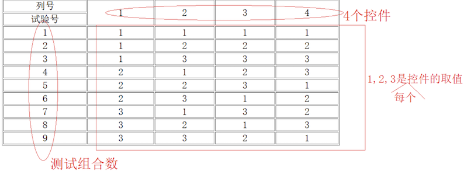

正交表法
定义
正交法,也叫正交实验法或者正交排列法, 就是使用最小的测试过程集合获得最大的测试覆盖率。 "正交实验"是研究多因素、多水平的一种实验方法,它利用正交表来对实验进行设计,通过少数实验代替全面的实验。 在一项实验中,把影响试验结果的量称为试验因素(因子)，简称因素。因素可以理解为试验过程中的自变量，试验结果可以看成因素的函数。 在试验过程中，每一个因素可以处于不同的状态或状况，把因素所处的状态或状况，称为因素的水平，简称水平。
历史案例
1992年AT&T公司,针对某一个软件做了一个回归测试： 在18个周（4个半月）的时间范围内测试1500条测试用例。后来开发时间推迟了，测试时间被压缩了。测试经理想了一个办法，两个人在8个周（2个月）测试1000条测试用例。但是测试经理不能保证该软件就是完全没有问题的。后来他决定用正交表去重新设计一下测试用例，422条测试用例，42个bug。测试完毕后，软件上线了。在上线的两年时间内。凡事被测试到的领域，都没有发现任何问题。后来呢，他从头到尾有总结了一番：有可能只会测试出32条bug。
前后对比：
- 测试用例的条数少了
- 测试出来bug的数量多了
正交表的构成

要点
所有组合中，只要任意两个因素间 进行了全排列即可。
步骤
- 根据需求把空间即其取值列举出来
- 根据空间和空间的取值个数,选择一个合适的正交表
- 根据控件的个数,选择正交表的次幂,也就是正交表中包含的最大值, 例如,4个控件,选择4次幂
- 根据控件取值个数,选择正交表的底,也就是正交表包含的最大值, 例如, 每个控件有3个取值,底是3
- 把控件及其取值映射到正交表中
- 把控件名字分别映射到正交表的列名位置
- 把正交表中每一列的数字分别用对应的控件取值替代
- 根据正交表,编写测试用例
案例
实现"字符属性设置"的测试用例编写

| 字体 | 字符样式 | 字体颜色 | 字号 | | :------: | :------: | :------: | :--: | | 仿宋 | 粗体 | 红色 | 20号 | | 楷体 | 斜体 | 绿色 | 30号 | | 华文彩云 | 下划线 | 蓝色 | 40号 |
allpairs工具的使用
- 利用Excel准备一个表格
- 将表格内容贴到txt文本中，并保存
- 通过allpairs 命令生成
- 拷贝结果到测试用例中
使用场景
需求中条件的组合量比较大的时候 需求两个两个相互组合的时候